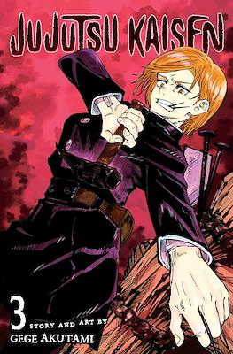
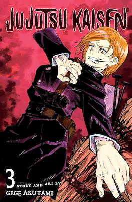

Sinopsis
Yuji Itadori decide pasar el tiempo con el Club de Ocultismo del instituto, pese a poseer unas habilidades atléticas extraordinarias. Con el tiempo, descubre que el mundo del oculto es real, y los miembros del club son atacados.

Personajes
Principales


Yuji Itadori
Nobara Kusikagi
Megumi Fushiguro
Satoru Gojo

Sukuna
Yuta Okotsku
Suguru Geto
Kento Nanami
Secundarios


Toge Inumaki
Panda
Maki Zenin
Mai Zenin

Aoi Todo
Mahito
Hanami
Yoshinobu GakuGanji
Arte

Obras
Manga
 

Jujutsu Kaisen está escrito e ilustrado por Gege Akutami. La serie comenzó su serialización en la revista Shūkan Shōnen Jump de Shūeisha el 5 de marzo de 2018.28 Shūeisha recopila y publica sus capítulos en volúmenes tankōbon individuales. El primer volumen se publicó el 4 de julio de 2018,19 y hasta el momento han sido publicados veintidós volúmenes.20 Shūeisha también publica la serie en español en la aplicación y el sitio web Manga Plus desde enero de 2019.21 VIZ Media publicó los primeros tres capítulos de su iniciativa «Jump Start».22 En marzo de 2019, VIZ Media anunció el lanzamiento impreso de la serie en América del Norte.23 El primer volumen se publicó el 3 de diciembre de 2019.24 El manga también cuenta con licencia para su distribución en España por Norma Editorial,325 y en México y Argentina por la Editorial Panini.
Anime
Se anunció una adaptación de la serie a anime en el número 52 de Shūkan Shōnen Jump publicado el 25 de noviembre de 2019.31 El autor del manga Gege Akutami y los miembros principales del reparto aparecieron en Jump Festa '20 el 22 de diciembre de 2019.32 La serie fue producida por el estudio MAPPA y dirigida por Park Sung-hoo. Hiroshi Seko estaba a cargo de los guiones y Tadashi Hiramatsu diseñó los personajes.

JUJUTSU KAISEN 0

Yuta Okkutsu está rodeado y es ayudado por Rika, su amiga de la infancia que murió hace 6 años y ahora está maldita ya que ambos prometieron casarse cuando crezcan. Conoce a Satoru Gojo, un hechicero Jujutsu en cuya dirección se une a la Escuela Técnica de Maldiciones Metropolitana de Tokio.